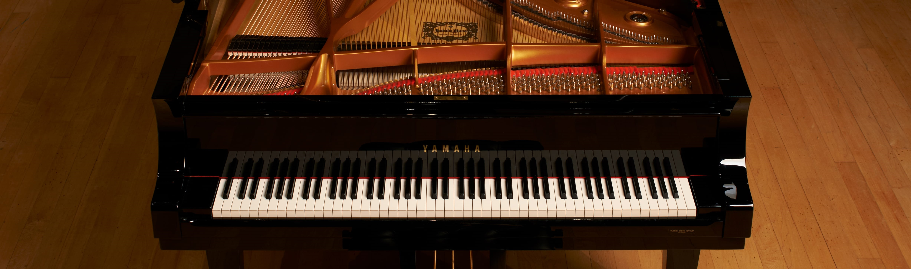

Piano

POPULARITY
The piano was invented at the end of the 17th century, had become widespread in Western society by the end of the 18th, and is still widely played today.
DIFICULTY LEVEL
For a beginner, it is easier to learn and memorise the notes on a piano because they repeat in the same pattern across all the keys. To make things even easier, most piano teachers will start off with teaching only the white keys for adults (a total of 7), or all black keys for kids (total of 5).
TIME TO LEARN
If you want to be a professional classical performer, you're looking at a minimum of 10 to 15 years of concentrated study with a master teacher, and hours of practice every day. Most people who want to play for their own enjoyment can get great results within three to five years of study and practice.
PRICE
There are many variants of keyboards, with costs ranging anywhere between Rs 20,000 and Rs 2 lakh-plus. Acoustic pianos, however, come at a higher price bracket. While grand pianos start at around Rs 5 lakh, for upright pianos it is roughly Rs 2 lakh.
The piano was invented at the end of the 17th century, had become widespread in Western society by the end of the 18th, and is still widely played today.
DIFICULTY LEVEL
For a beginner, it is easier to learn and memorise the notes on a piano because they repeat in the same pattern across all the keys. To make things even easier, most piano teachers will start off with teaching only the white keys for adults (a total of 7), or all black keys for kids (total of 5).
TIME TO LEARN
If you want to be a professional classical performer, you're looking at a minimum of 10 to 15 years of concentrated study with a master teacher, and hours of practice every day. Most people who want to play for their own enjoyment can get great results within three to five years of study and practice.
PRICE
There are many variants of keyboards, with costs ranging anywhere between Rs 20,000 and Rs 2 lakh-plus. Acoustic pianos, however, come at a higher price bracket. While grand pianos start at around Rs 5 lakh, for upright pianos it is roughly Rs 2 lakh.